화학분석기사(구) (2019-04-27 기출문제)
1과목: 일반화학
1. 염화칼륨(KCI) 수용액에 질산은(AgNO3) 수용액을 과량으로 가하여 백색 침전이 29.0g 생성되었다. 다음 중 백색 침전의 화학식과 양을 바르게 표기한 것은? (단, 각 원소의 원자량은 Ag:108, N:14, O:16, K:39, CI:35.5이다.)
- KCI, 0.202몰
- KCI, 2.02몰
- AgCI, 0.202몰
- AgCl, 2.02몰
(정답률: 85%)

2. 한 수저는 금으로 도금하고, 다른 수저는 구리로 도금하고자 한다. 만약 발전기에서 나오는 일정한 전류를 두 수저를 도금하는데 사용하였다면, 어느 수저에 먼저 1g이 도금되고 그 이유는 무엇인가? (단, 금의 원자량은 197, 구리의 원자량은 63.5이며, 반쪽 환원 반응식은 다음과 같다.)
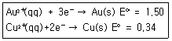
- 금 수저-금의 원자량이 더 크기 때문이다.
- 금 수저-금이 더 많은 전자로 환원되기 때문이다.
- 구리 수저-구리가 기전력으로 더 낮기 때문이다.
- 구리 수저-구리가 더 적은 전자로 환원되기 때문이다.
(정답률: 59%)
3. 암모니아를 물에 녹여 0.10M의 용액 1.00L를 만들었다. 이 용액의 OH-의 농도는 1.0×10-3M 이라고 가정할 때, 암모니아의 이온화 평형상수 K는 얼마인가?
- 1.0×10-3
- 1.0×10-4
- 1.0×10-5
- 1.0×10-6
(정답률: 44%)
4. 단위가 틀리게 연결된 것은?
- 전하량-coulomb(C)
- 전류-ampere(A)
- 전위(volt)(V)
- 에너지-Watt(W)
(정답률: 85%)
5. 다음 알케인의 IUPAC의 이름은 무엇인가?
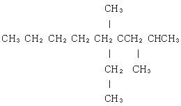
- ethyl-2.4-dimethyloctane
- 2-ethyl-2.4-dimethylnonane
- 4-ethyl-2.4-dimethyloctane
- 4-ethyl-2.4-dimethylnonane
(정답률: 70%)
6. 전기화학전지에 관한 패러데이의 연구에 대한 설명 중 옳지 않은 것은?
- 어떤 전지에서나 전극에서 생성되거나 소모된 물질의 양은 전지를 통해 흐른 전하의 양에 반비례한다.
- 일정한 전하량의 전지를 통하여 흐르게 되면 여러 물질들이 이에 상응하는 당량만큼 전극에서 생성되거나 소모된다.
- 페러데이의 법칙은 전기화학 과정에 대한 화학양론을 요약한 것이다.
- 페러데이 상수 F=96.485.37 C/mol이다.
(정답률: 84%)
7. 세로토닌은 신경전달물질이다. 세로토닌의 물질량은 176g/mol이다. 5.31g의 세로토닌을 분석하여 탄소 3.62g, 수소 0.362g, 질소 0.844g, 산소 0.482g을 함유한다는 사실을 알았다. 세로토닌의 분자식으로 예상되는 것은?
- C10H12N2O
- C10H26NO
- C11H14NO
- C9H10N3O
(정답률: 77%)
8. 화합물 한 쌍을 같은 몰수로 혼합하는 다음 4가지 경우 중 염기성 용액이 되는 경우는 모두 몇 가지인가?
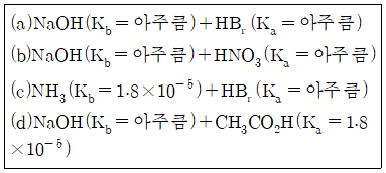
- 4
- 3
- 2
- 1
(정답률: 87%)
9. 다음 중 극성 분자가 아닌 것은?
- CCl4
- H2O
- CH3OH
- HCl
(정답률: 89%)
10. 메타-다이나이트로벤젠의 구조를 옳게 나타낸 것은?
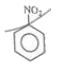
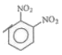
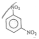
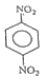
.
(정답률: 80%)
11. 수용액의 산성도를 나타내는 pH에 대한 설명 중 옳지 않은 것은?
- pH값은 pH=-log10[H3O+]로부터 구할 수 있다.
- pH가 7보다 작은 경우를 산성용액이라 한다.
- 중성용액의 pH는 14이다.
- pH meter를 이용하여 측정할 수 있다.
(정답률: 89%)
12. 11.99g의 염산이 녹아있는 5.48M 염산 용액의 부피는 몇 mL인가? (단, 염산의 분자량은 36.45이다.)
- 12.5
- 17.8
- 30.4
- 60.0
(정답률: 79%)
13. 다음 작용기에 대한 설명 중 옳지 않은 것은?
- 알코올은 -OH작용기를 가지고 있다.
- 페놀류는 -OH기가 방향족 고리에 직접 붙어 있는 화학물이다.
- 에테르는 -O-로 나타내는 작용기를 가지고 있다.
- 1차 알코올은 -OH기가 결합되어 있는 탄소원자에 다른 탄소원자가 2개 이상 결합되어 있는 것이다.
(정답률: 85%)
14. 핵이 분해하여 방사능을 방출하는 방사성 붕괴에 대한 설명으로 틀린 것은?
- 방사성 붕괴는 일반적으로 전형적인 1차 반응 속도식을 따른다.
- 베타 입자는 방사능의 일종으로 헬륨의 핵(nucleus)이다.
- 감마선은 방사능 가운데 유일하게 입자가 아닌 전자기파이다.
- 반감기(half-life)란 방사성 붕괴를 하는 핵종의 수가 처음 값의 반이 되는 데 필요한 시간이다.
(정답률: 64%)
15. 전자가 보어모델(Bohr Model)의 n=5 궤도에서 n=3 궤도로 전이할 때 수소원자에서 방출되는 빛의 파장은 얼마인가? (단, 뤼드베리 상수 RH=1.9678×10-2nm-1)
- 434.5bnm
- 486.1nm
- 714.6nm
- 954.6nm
(정답률: 61%)
16. 16.0M인 H2SO4 용액 8.00mL를 용액의 최종 부피가 0.125L가 될 때까지 묽혔다면, 묽힌 후 용액의 몰농도는 약 얼마가 되겠는가?
- 102M
- 10.2M
- 1.02M
- 0.102M
(정답률: 76%)
17. 기체분자 운동론(kinetic molecular theory)의 기본 가정으로 틀린 것은?
- 기체 입자의 부피는 무시할 수 있다.
- 기체 입자는 계속해서 움직이고 용기의 벽에 입자가 충돌하여 압력이 발생한다.
- 기체 입자들 사이에는 인력이 작용하므로 압력 계산시 고려해야 한다.
- 기체 입자 집합의 평균 운동 에너지는 기체의 절대 온도에 비례한다.
(정답률: 72%)
18. 2M NaOH 30mL에는 몇 mg의 NaOH가 존재하는가? (단, Na의 원자량은 23이다.)
- 1200
- 1800
- 2400
- 3600
(정답률: 81%)
19. 다음 각 쌍의 2개 물질 중에서 물에 더욱 잘 녹을 것이라고 예상되는 물질을 1개씩 옳게 선택한 것은?
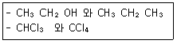
- CH3CH2OH, CHCl3
- CH3CH2OH, CCl4
- CH3CH2CH3, CHCl3
- CH3CH2CH3, CCl4
(정답률: 89%)
20. 다음 유기 화합물의 명칭 중 틀린 것은?
- CH2=CH2의 중합체는 폴리스티렌이다.
- CH2=CH-CN의 중합체는 폴리아크릴로니트릴이다.
- CH2=CHOCOCH3의 중합체는 폴리아세트산비닐이다.
- CH2=CHCl의 중합체는 폴리염화비닐이다.
(정답률: 69%)
2과목: 분석화학
21. 페러데이 상수는 전류량과 반응한 화합물의 양과의 관계를 알아내는데 사용되는 값으로 96485가 자주 사용되고 있다. 이러한 페러데이 상수의 단위(unit)로 알맞은 것은?
- C/mol
- A/mol
- C/g
- A/g
(정답률: 87%)
22. 다음 반응식은 어떠한 평행상태인가?
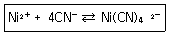
- 약한 산의 해리
- 약한 염기의 해리
- 착이온의 생성
- 산화-환원 평형
(정답률: 78%)
23. 다음 ()안에 가장 적합한 용어는?
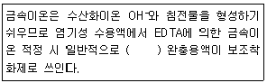
- 질산이온(NO3-)
- 암모니아(NH3)
- 황산이온(SO42-)
- 메틸아민(CH3NH2)
(정답률: 68%)
24. EDTA에 대한 설명으로 틀린 것은?
- EDTA는 금속이온의 전화와는 무관하게 금속이온과 일정 비율로 결합한다.
- EDTA 적정법은 물의 경도를 측정할 때 사용할 수 있다.
- EDTA는 Li+, Na+, K+와 같이 1가 양이온들 하고만 착물을 형성한다.
- EDTA 적정 시 금속-지시약 착화합물을 금속-EDTA 착화합물보다 덜 안정하다.
(정답률: 78%)
25. 아스코브산을 요오드 용액으로 산화-환원 적정할 할 때 주로 사용할 수 있는 지시약은?
- 녹말
- 페놀프탈레인
- 아연 이온
- 리트머스
(정답률: 80%)
26. 다음의 증류수 또는 수용액에 고체 Hg2(IO3)2(Ksp=1.3×10-18)를 용해시킬 때, 용해된 Hg22+의 농도가 가장 큰 것은?
- 증류수
- 0.10M KIO3
- 0.20M KNO3
- 0.30M NaIO3
(정답률: 63%)
27. 0.850g의 미지시료에는 KBr(몰질량 119g)과 KNO3(몰질량 101g)만이 함유되어 있다. 이 시료를 물에 용해한 후 브롬화물을 완전히 적정하는데 0.⑤00M AgNO3 80.0mL가 필요하였다. 이 때 고체시료에 있는 KBr의 무게 백분율은?
- 44.0%
- 47.55%
- 54.1%
- 56.0%
(정답률: 63%)
28. CaF2의 용해와 관련된 반응식에서 과량의 고체 CaF2가 남아 있는 포화된 수용액에서 Ca2+(qq)의 물농도에 대한 설명으로 옳은 것은? (단, 용해도의 단위는 mol/L이다.)
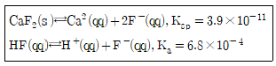
- KF를 첨가하면 몰 농도가 감소한다.
- HCI을 첨가하면 몰 농도가 감소한다.
- KCI을 첨가하면 몰 농도가 감소한다.
- H2O를 첨가하면 몰 농도가 증가한다.
(정답률: 67%)
29. 할로겐 음이온을 0.⑤0M Ag+ 수용액으로 적정하였다. AgCl, AgBr, Agl의 용해도곱은 각각 1.8×10-10, 5.0×10-13, 8.3×10-17이다. 당량점이 가장 뚜렷하게 나타나는 경우는?
- 0.⑤M Cl-
- 0.10M Cl-
- 0.10M Br-
- 0.10M I-
(정답률: 46%)
30. 활동도는 용액 중에서 그 화학종이 실제로 작용하는 반응능력을 말한다. 이에 비해 활동도계수는 이온들의 이상적 행동으로부터 벗어나는 정도를 나타낸다. 활동도계수에 대한 설명으로 가장 옳은 것은?
- 활동도계수는 무한히 묽은 용액에서 무한히 작아진다.
- 활동도계수는 공존하는 화학종의 종류보다는 용액의 이온세기에 따라 결정된다.
- 이온의 전하가 커지면 활동고계수가 1로부터 벗어나는 정도가 작아진다.
- 전하를 갖지 않는 중성분자의 활동도계수는 이온세기와는 무관하게 0이다.
(정답률: 71%)
31. 황산알루미늄 용액에 여분의 염화바륨을 가하여 0.6978g의 황산바륨 침전을 얻었다. 시료용액에 녹아있는 황산알루미늄의 무게는? (단, 황산알루미늄의 화학식량은 342.23, 황산바륨의 화학식량은 233.4이다.)
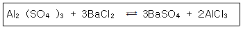
- 0.1217g
- 0.3411g
- 0.3651g
- 0.4868g
(정답률: 68%)
32. 어떤 유기산 10.0g을 녹여 100mL 용액을 만들면, 이 용액에서는 유기산의 해리도는 2.50%이다. 우기산은 일양성자산이며, 유기산의 Ka가 5.00×10-4이었다면, 유기산의 화학식량은?
- 6.40g/mol
- 12.8g/mol
- 64.0g/mol
- 128g/mol
(정답률: 44%)
33. 다음의 지시약에 대한 설명에서 옳은 것만으로 나열된 것은?
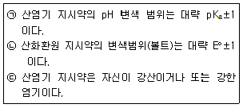
- ㉠
- ㉠, ㉡
- ㉡, ㉢
- ㉠, ㉡, ㉢
(정답률: 66%)
34. pH 10.00인 100mL 완충용액을 만들려면 NaHCO3(FW84.01)4.00과 몇 g의 Na2CO3(FW1⑤.99)를 섞어야 하는가?
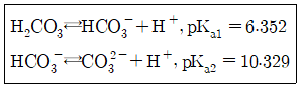
- 1.32g
- 2.09g
- 2.36g
- 2.96g
(정답률: 43%)
35. 진한 황산의 무게 백분율 농도는 96%이다. 진한 황산의 물농도는 얼마인가? (단, 진한 황산의 밀도는 1.84kg/L, 황산의 분자량은 98.08g/mol이다.)
- 9.00M
- 12.0M
- 15.0M
- 18.0M
(정답률: 74%)
36. 1몰랄(m) 농도 용액에 대한 설명으로 옳은 것은?
- 용액 1000g에 그 용질 1몰이 들어있는 용액
- 용매 1000g에 그 용질 1몰이 들어있는 용액
- 용액 100g에 그 용질 1g이 들어있는 용액
- 용매 1000g에 그 용질 1당량이 들어있는 용액
(정답률: 77%)
37. 양성자가 하나인 어떤 산(acid)이 있다. 수용액에서 이 산의 짝산, 짝염기의 평형상수 Ka와 Kb가 존재할 때, 그 관계식으로 옳은 것은? (단, pKω=14.00이라고 가정한다.)
- Ka×Kb=Kω
- Ka/Kb=Kω
- Kb/Ka=Kω
- Ka×Kb×Kω=1
(정답률: 86%)
38. Cu(s)+2Ag+⇄Cu2++2Ag(s) 반응의 평형상수 값은 약 얼마인가? (단, 이들 반응을 구성하는 반쪽반응과 표준전극전위는 다음과 같다.)
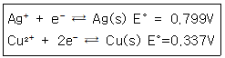
- 2.5×1010
- 2.5×1012
- 4.1×1015
- 4.1×1018
(정답률: 54%)
39. 네른스트식은 어떤 양들 사이의 관계식인가?
- 농도, 전위차
- 농도, 삼투압
- 온도, 평형상수
- 엔탈피, 엔트로피, 자유에너지
(정답률: 76%)
40. Pbl2(s) ⇄ Pb2+(aq)+2I-(aq)과 같은 용해반응을 나타내고, Ksp는 7.9×10-9일 때 다음 평형반응의 평형상수 값은?
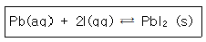
- 7.9×10-9
- 1/(7.9×10-9)
- (7.9×10-9)×1.0×10-4)
- 1.0×10-14)/(7.9×10-9)
(정답률: 66%)
3과목: 기기분석I
41. X선 회절법에 대한 설명으로 틀린 것은?
- 1912년 von Laue에 의해 발견되었다.
- 결정성 화합물을 편리하고 실용적으로 정성확인이 가능하다.
- X선 분말(powder) 회절법은 고체에 존재하는 화합물에 대한 정성적인 정보만 제공한다.
- X선 분말 회절법은 각 결정 물질마다 X선 회절 무늬가 톡특하다가는 사실에 기초한다.
(정답률: 74%)
42. 기기분석 방법의 정밀도를 나타내는 성능계수 용어가 아닌 것은?
- 평균
- 평균치의 표준편차
- 변동계수(CV)
- 상대표준편차(RSD)
(정답률: 70%)
43. 다음 중 전자전이가 일어나지 않는 것은?
- σ-σ+
- π-π+
- n-π+
- σ-π+
(정답률: 54%)
44. 아세트산(CH3COOH)의 기준진동방식의 수는?
- 16개
- 17개
- 18개
- 19개
(정답률: 67%)
45. 1.41T의 자기장을 걸어주었을 때 수소 핵은 약 몇 MHz의 주파수에 흡수하는가? (단, 질량수가 1인 수소의 자기회전 비는 2.68×108/Tㆍs이다.)
- 30MHz
- 60MHz
- 100MHz
- 600MHz
(정답률: 57%)
46. 단색화 장치의 성능을 결정하는 요소로서 가장 거리가 먼 것은?
- 복사선의 순도
- 근접파장 분해능력
- 복사선의 산란효율
- 스펙트럼의 띠 너비
(정답률: 40%)
47. 적외선(IR) 흡수 분광법에서 분자의 진동은 신축과 굽힘의 기본범주로 구분된다. 다음 중 굽힘진동의 중류가 아닌 것은?
- 가위질(scissoring)
- 꼬임(twisting)
- 시프팅(shifting)
- 앞뒤 흔듦(wagging)
(정답률: 66%)
48. Fourier 변환 적외선 흡수분광기의 장점이 아닌 것은?
- 신호 잡음비 개선
- 일정한 스펙트럼
- 빠른 분석속도
- 바탕보정 불필요
(정답률: 73%)
49. 13C NMR의 장점이 아닌 것은?
- 분자의 골격에 대한 정보를 제공한다.
- 봉우리의 겹침이 적다.
- 탄소 간 동종 핵의 스핀-스핀 짝지음이 관측되지 않는다.
- 스핀-격자 이완시간이 길다.
(정답률: 58%)
50. 다음 화합물 중 가장 높은 파장의 형광을 나타내는 것은?
- C6H5Br
- C6H5F
- C6H6
- C6H5Cl
(정답률: 45%)
51. 적외선분광법에서 한 분자의 구조와 조성에서의 작은 차이는 스펙트럼에서 흡수봉우리의 분포에 영향을 준다. 분자의 성분과 구조에서 특정 기능기에 따라 고유 흡수 파장을 나타내는 영역을 무엇이라 하는가?
- 그룹 영역(group region)
- 원 적외선 영역(far IR region)
- 지문 영역(fingerprint region)
- 근 적외선 영역(near IR region)
(정답률: 77%)
52. 인광에 대한 설명으로 틀린 것은?
- 계간전이를 통해서 발생
- 무거운 분자일수록 유리
- 10-4~10초 정도의 평균수명
- 산소와의 충돌이 감소하면 계간전이가 증가
(정답률: 51%)
53. 원자흡수분광법과 원자형광분광법에서 기기의 부분 장치 배열에서의 가장 큰 차이는 무엇인가?
- 원자흡수분광법은 광원 다음에 시료잡이가 나오고 원자형공분광법은 그 반대이다.
- 원자흡수분광법은 파장선택기가 광원보다 먼저 나오고 원자형광분광법은 그 반대이다.
- 원자흡수분광법에서는 광원과 시료잡이가 일직선상에 있지만 원자형광분광법에서는 광원과 시료잡이가 직각을 이룬다.
- 원자흡수분광법은 레이저 광원을 사용할 수 없으나 원자형광분광법에서는 사용 가능하다.
(정답률: 77%)
54. 원자흡수분광법에서 휘발성이 적은 화합물 생성 등으로 인하여 화학적 방해가 발생한다. 이러한 방해를 방지하는 방법에 해당되지 않는 것은?
- 높은 온도의 불꽃 이용
- 보호제(protective agent)의 사용
- 해방제(releasing agent)의 사용
- 이온화 활성제의 사용
(정답률: 58%)
55. 밀집된 상태에 있는 다원자분자의 흡수스펙트럼에 포함되어 있는 에너지의 구성요소가 아닌 것은?
- 몇 개의 결합전자의 에너지 상태로부터 생기는 분자의 전자에너지
- 들뜬 상태의 원자핵 분열과 관련된 양자에너지
- 원자사이의 진동수와 관련된 전체 에너지
- 한 분자 내의 여러 가지 회전운동과 관련된 에너지
(정답률: 58%)
56. 전자기 복사선 스펙트럼 영역을 나타낸 표에서 X에 해당하는 복사선은?
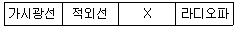
- 감마선
- 자외선
- 마이크로파
- X-선
(정답률: 78%)
57. 자외선-가시광선(UV-Vis) 흡수분광법에서 사용되는 광원이 아닌 것은?
- X선관
- 중수소등
- 광-발출 다이오드
- 텅스텐 필라멘트등
(정답률: 68%)
58. 유도쌍플라즈마 광원(ICP)의 특징이 아닌 것은?
- 원자가 빛살 진로에 머무르는 시간이 짧다.
- ICPMS의 광원이 될 수 있으므로 충분한 이온화가 생긴다.
- 광원의 온도가 높기 때문에 원소 상호간에 방해가 적다.
- 넓은 농도범위에 걸쳐 검정곡선이 성립한다.
(정답률: 36%)
59. 적외선(IR) 흡수분광법에서의 진동 짝지음에 대한 설명으로 틀린 것은?
- 두 신축진동에서 두 원자가 각각 단독으로 존재할 때 신축진동사이에 센 짝지음이 일어난다.
- 짝지음 진동들이 각각 대략 같은 에너지를 가질 때 상호작용이 크게 일어난다.
- 두 개 이상의 결합에 의해 떨어져 진동할 때 상호작용은 거의 일어나지 않는다.
- 짝지음은 같은 대칭성 화학종에서 진동할 때 일어난다.
(정답률: 49%)
60. 한번 측정한 스펙트럼의 신호대-잡음비가 6/1이다. 신호대-잡음비를 30/1로 증가시키기 위해서는 몇 번을 측정한 스펙트럼을 평균화하여야 하는가?
- 5
- 10
- 20
- 25
(정답률: 79%)
4과목: 기기분석II
61. 초임계 유체 크로마토그래피에 대한 설명으로 틀린 것은?
- 초임계 유체에서는 비휘발성 분자가 잘 용해되는 장점이 있다.
- 비교적 높은 온도를 사용하므로 분석물들의 회수가 어렵다.
- 이산화탄소가 초임계 유체로 널리 사용된다.
- 초임계 유체 크로마토그래피는 기체와 액체 크로마토그래피의 혼성방법이다.
(정답률: 73%)
62. 다음 중 분리분석법이 아닌 것은?
- 크로마토그래피
- 추출법
- 증류법
- 폴라로그래피
(정답률: 77%)
63. 적하 수은 전극(dropping mercury electrode)을 사용하는 폴라로그래피(polarography)에 대한 설명으로 옳지 않은 것은?
- 확산전류(diffusion current)는 농도에 비례한다.
- 수은이 항상 새로운 표면을 만들어 내어 재현성이 크다.
- 수은의 특성상 환원 반응보다 산화 반응의 연구에 유용하다.
- 반파 전위(half-wave potential)로부터 정성적 정보를 얻을 수 있다.
(정답률: 69%)
64. 질량 분석기로서 알 수 없는 것은?
- 시료물질의 원소의 조성
- 구성원자의 동위원소의 비
- 생화학 분자의 분자량
- 분자의 흡광계수
(정답률: 70%)
65. 막 지시전극에 사용되는 이온선택성 막의 공통적인 특성에 대한 설명으로 틀린 것은?
- 이온선택성 막은 분석물질 용액에서 용해도가 거의 0 이어야 한다.
- 막은 작아도 약간의 전기전도도를 가져야 한다.
- 막속에 함유된 몇가지 화학종들은 분석물 이온과 선택적으로 결합할 수 있어야 한다.
- 할로겐화은과 같은 낮은 용해도를 갖는 이온성 무기화합물은 막으로 사용될 수 없다.
(정답률: 61%)
66. 갈바니 전지에 대한 설명으로 틀린 것은?
- 전기를 발생하기 위해 자발적인 화학반응을 이용한다.
- 산화전극(anode)은 산화가 일어나는 전극이다.
- 전자는 산화전극에서 생성되어 도선을 따라 환원전극으로 흐른다.
- 산화전극을 오른쪽에서 환원전극을 왼쪽에 표시한다.
(정답률: 76%)
67. 폴리에틸렌의 등은 결정화 현상을 분석할 때 가장 알맞은 열분석법은?
- DTA
- DSC
- TG
- DMA
(정답률: 64%)
68. 얇은 층 크로마토그래피에 대한 설명으로 틀린 것은?
- 얇은 층 크로마토그래피는 제품의 순도를 판별하는 중요한 분석법으로 사용되고 있다.
- 전개판에 시료를 건조시킨 후 전개액에 시료가 잠기도록 해야 한다.
- 전개상자를 이용해 시료를 분리시킬 때 뚜껑을 닫아 전개용매 증기로 상자가 포화되도록 해야 한다.
- 지연인자(Rf)는 정지상의 두께, 온도, 시료의 크기에 의해 영향을 받는다.
(정답률: 63%)
69. 기체크로마토그래피에서 기체-액체 크로마토그래피(GLC)의 물질분리의 가장 중요한 가기전(평형의 종류)은 무엇인가?
- 흡착
- 이온교환
- 기체와 액체 사이의 분배
- 서로 섞이지 않는 액체 사이의 분배
(정답률: 70%)
70. 액체크로마토그래피에서 사용되는 굴절률검출기에 대한 설명으로 틀린 것은?
- 다른 형태의 검출기보다 비교적 감도가 좋다.
- 거의 모든 용질에 감응한다.
- 흐름의 속도에 영향을 받지 않는다.
- 온도에 민감하여 일정한 온도가 필수적이다.
(정답률: 44%)
71. 전기화학분석법에서 포화칼로멜 기준전극에 대하여 전극 전위가 0.115V로 측정이 되었다. 이 전극 전위를 포화 Ag/AgCl 기준전극에 대하여 측정하면 얼마로 나타나겠는가? (단, 표준수소전극에 대한 상대전위는 포화칼로멜 기준전극=0.244V, 포화 Ag/AgCI 기준전극=0.199V이다.)
- 0.16V
- 0.18V
- 0.20V
- 0.22V
(정답률: 59%)
72. 질량분석법에서 분자의 전체 스펙트럼(full spectrum)을 알 수 있는 검출방법은?
- MRM 모드
- SCAN 모드
- SIM 모드
- SRM 모드
(정답률: 72%)
73. 전기분해 효율이 100%인 전기분해전지가 있다. 산화전극에서는 산소기체가, 환원전극에서는 구리가 석출되도록 0.5A의 일정전류를 10분 동안 흘렸다. 석출된 구리의 무게는 약 얼마인가? (단, 구리의 물질량은 63.5g/mol 이다.)
- 0.⑤g
- 0.10g
- 0.20g
- 0.40g
(정답률: 42%)
74. 크로마토그래피 분석법에서 띠 넓힘에 영향을 주는 인자에 대한 설명으로 가장 옳은 것은?
- 다중통로에 의한 띠 넓힘은 분자가 충전관을 지나가는 통로가 다양하기 때문ㅁ에 나타난다.
- 세로확산에 의한 띠 넓힘은 이동상과 정지상 사이의 평형이 매우 느릴 때 일어난다.
- 상 사이의 질량이동에 의한 띠 넓힘은 이동상의 속도가 증가하면 감소하는 경향이 있다.
- 세로확산에 의한 띠 넓힘은 이동상의 속도가 증가하면 증가하는 경향이 있다.
(정답률: 52%)
75. ICP를 이용한 질량분석장치에서 space charge에 대한 설명으로 가장 거리가 먼 것은?
- 이것이 생기면 이온의 투과율이 감소한다.
- 이것을 감소시키기 위하여 시료를 희석시켜 측정한다.
- 스펙트럼의 모양은 달리지나 질량의 편차는 거의 생기지 않는다.
- 매트릭스에 의한 영향으로 일반적으로 신호가 줄어든다.
(정답률: 53%)
76. 고분자량의 글로코오스 계열 화학물을 분리하는데 가장 적합한 크로마토그래피 방법은?
- 이온교환 크로마토그래피
- 크기별 배제 크로마토그래피
- 기체 크로마토그래피
- 분배 크로마토그래피
(정답률: 76%)
77. 전기화학 반응에서 일어나는 편극의 종류에 해당하지 않는 것은?
- 농도편극
- 결정화 편극
- 전하이동 편극
- 전압강화 편극
(정답률: 49%)
78. 전기화학전지에 사용되는 염다리(salt bridge)에 대한 설명으로 틀린 것은?
- 염다리의 목적은 전지 전체를 통해 전기적으로 양성상태를 유지하는 데 있다.
- 염다리는 양쪽 끝에 반투과성의 막이 있는 이온성 매질이다.
- 염다리는 고농도의 KNO3를 포함하는 젤로 채워진 U자관으로 이루어져 있다.
- 염다리의 농도가 반쪽전지의 농도보다 크기 때문에 염다리 밖으로의 이온의 이동이 염다리 안으로의 이온의 이동보다 크다.
(정답률: 63%)
79. 기체크로마토그래피에서 할로겐과 같이 전기음성도가 큰 작용기를 포함하는 분잗에 감도가 좋은 검출기는?
- 불꽃이온화 검출기(FID)
- 전자포착 검출기(ECD)
- 열전도도 검출기(TCD)
- 원자방출 검출기(AED)
(정답률: 77%)
80. 시차주사 열량법(DSC)에서 발열(exothermic) 봉우리를 나타내는 물리적 변화는?
- 결정화(crystallization)
- 승화(sublimation)
- 증발(vaporization)
- 용해(melting)
(정답률: 75%)
또한, 백색 침전의 양을 계산하기 위해 질산 수용액과 반응한 KCI의 몰농도를 계산해야 한다. 질산 수용액이 과량으로 가해졌으므로, KCI가 한정물질이다. 따라서, KCI의 몰농도를 계산하면 된다.
KCI의 몰질량은 K의 원자량(39) + CI의 원자량(35.5) = 74.5g/mol 이다. 따라서, 29.0g의 백색 침전이 생성되었으므로, KCI의 몰수는 29.0g / 74.5g/mol = 0.389몰 이다.
따라서, 정답은 "AgCI, 0.202몰" 이다.